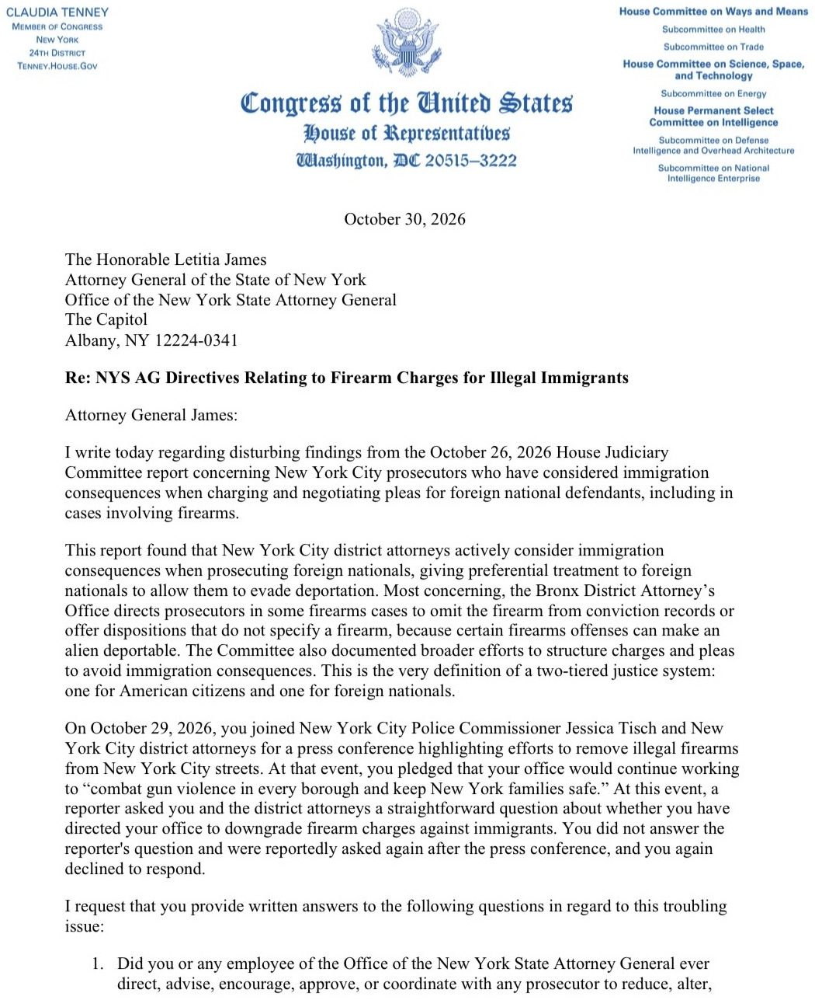
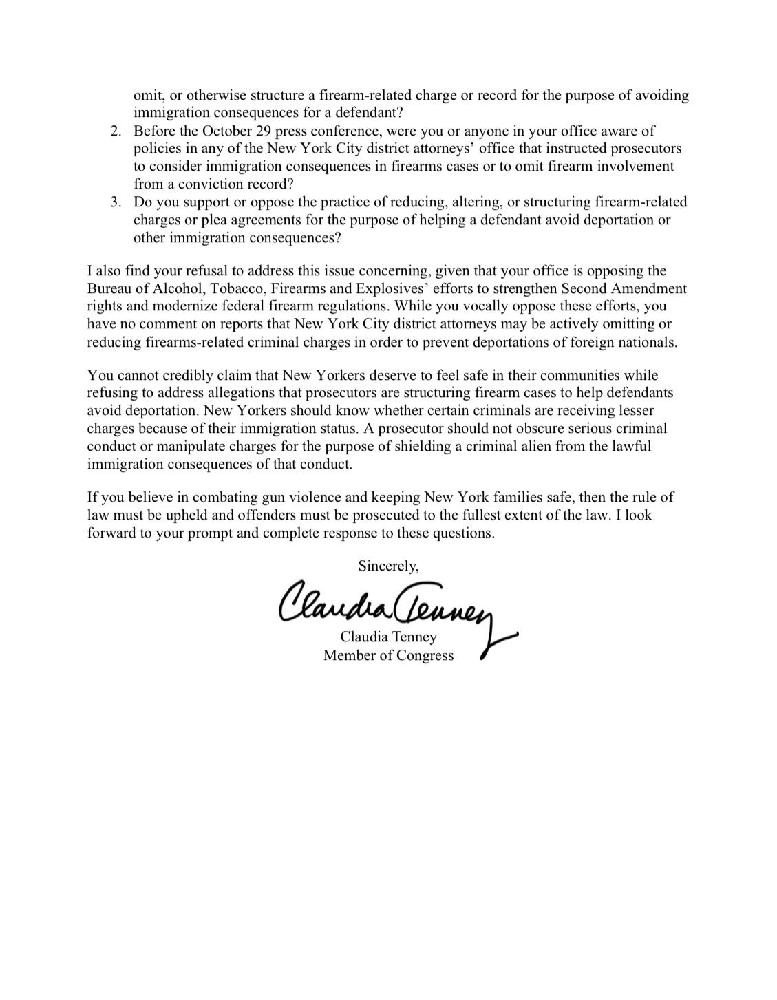

.@AAGMcDonald in Minnesota: "Today, we are announcing just a sliver of the immense work underway to restore the rule of law, safeguard taxpayer dollars, protect the vulnerable, and punish wrongdoers in Minnesota. Just this week alone, five defendants have been charged with health care fraud offenses in Medicaid fraud schemes involving more than $48 million in intended loss, including $29 million in schemes uncovered for the first time."
.@DrOzCMS: "We asked Minnesota to revalidate all of the high-risk providers... One in three people, roughly, who were providing services were not allowed to provide services. That degree of fraud — you have to be purposely be averting your glance to allow that to happen."
.@AAGMcDonald: "Let me be clear: This is still the beginning of our work in Minnesota. We will be here for as long as it takes to punish the wrongdoers in Minnesota, deter additional criminal conduct, and restore the public's confidence in the rule of law."
▶ Watch on XNYC 'fraud factory' stole $7M in federal benefits and used it on fancy cars and payments to Yemen
Here illegally. Used NYS driver’s licenses to open ghost pharmacies and rip off Americans for $10 million.
Stellar work @NassauCountyPD and @NassauDA with assist @DOLOIG @OIGatHHS @USPIS_HQ @DEAHQ and @ICEgovERO.
We also launched the PHANTOM Task Force. I promised every possible resource @VP’s @WHFraudTF can bring to the fight.
🚨 WOW! AN OCEAN of Polish patriots are pouring into the streets outside Poland's constitutional court to defend it from pro-EU Donald Tusk's power grab against the populists and President Karol Nawrocki
The court's conservative chief is being "SUSPENDED" and they waited RIGHT after Nawrocki left the country to carry out the power grab.
BUT NOW THE PRESIDENT IS BACK!
Polish patriots aren't going to let this slide! 🇺🇸🇵🇱
JUST IN: 🇵🇱 Polish Ambassador to Romania resigns over Prime Minister Tusk's alleged unlawful attempt to take over the Constitutional Tribunal.
Daniel J. Sullivan, the independent candidate running for Senate in Alaska whose name is almost identical to the Republican senator running for reelection, left his hometown of Petersburg earlier this week, multiple sources confirmed to CBS News.
One resident and former student of Sullivan's said she saw Sullivan on a flight to Anchorage on Monday — two days before The New York Times first reported that he was recruited by operatives linked to Democrat Mary Peltola's campaign.
‼️300 @DISNEY PEDOPHILES‼️ and human traffickers BUSTED — 11 trafficking victims rescued by @PolkCoSheriff department.
👉🏼 32 of those arrested were here illegally from; Italy, India, Peru, Ecuador and Haiti — 22 were illegally collecting public assistance totaling more than $100,000 a year.
NY AG Letitia James was SILENT when asked whether prosecutors were reducing or eliminating charges to help illegal immigrants avoid deportation.
Every New Yorker deserves an answer.
I just sent her a letter demanding one.


SECRETARY RUBIO at G20: By translating our shared interests into practical cooperation and real action, we can reinforce global stability, and more importantly, we can deliver meaningful results for our citizens.
One month ago, President Trump launched https://America.gov a government built around you.
It puts you first. Respects your time. And actually works for YOU.
See the historic launch yourself in Hello, America. 🇺🇸
Bari Weiss and '60 Minutes' boss weren't briefed on deportee's 'gay' asylum claim ahead of controversial segment: sources
BREAKING: America just announced up to $70M to close its mining workforce gap with China, which graduates over 15x more mining engineers annually.
The Department of Energy will fund university training programs to double U.S. graduates in mining and critical minerals within two years, with American mining engineers earning over $100K annually in median wages.
*TRUMP: FANNIE, FREDDIE WILL INVEST $40B IN FLORIDA MORTGAGES
Eli Lilly has some banger drugs coming out!